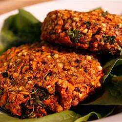

Cajun Veggie Burgers with Kasha

Description
This Cajun veggie burger recipe is a great option for a quick dinner,
and with fast-cooking kasha (buckwheat) as the base, your meal will
be ready in no time. Veggie burgers make for fun vegan recipes because
once you make them, there are so many options for eating them! On a
bun, on some greens, under a pickle and a tomato, with some
home-baked french fries...
Ingredients
- 2 cups water
- 1 cup kasha (toasted buckwheat groats)
- 2 carrots, grated
- 1/4 cup chopped fresh parsley, or to taste
- 1 tablespoon olive oil
- 1 teaspoon dried basil
- 1 teaspoon dried thyme
- 1/2 teaspoon dried oregano
- 1/2 teaspoon paprika
- 1/2 teaspoon dry mustard
- 1/4 teaspoon cayenne pepper
- salt and ground black pepper to taste
Steps
- Bring water and kasha to a boil. Reduce heat to low and simmer,
without stirring, until kasha groats are soft and fully open,
about 15 minutes. Let cool.
- Preheat the oven to 350 degrees F (175 degrees C). Line a baking
sheet with parchment paper.
- Stir carrots, parsley, olive oil, basil, thyme, oregano, paprika,
mustard, and cayenne pepper into the kasha. Form mixture into
patties and place on the prepared baking sheet.
- Bake in the preheated oven until browned on the outside, about
30 minutes.